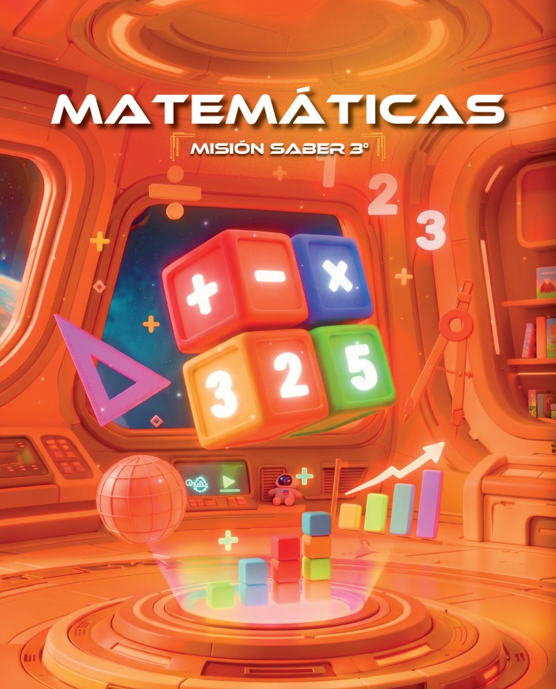

Recursos cromáticos extraídos de la cabina espacial y los cubos de Matemáticas. Haz clic en cualquier tarjeta de color para copiar su variable CSS o código HEX al portapapeles.

Esta paleta combina la calidez inmersiva de la cabina de mando (tonos ámbar y mandarina espacial) con el dinamismo lúdico de los 4 cubos centrales que representan las matemáticas (Rojo para operaciones, Azul para multiplicación, Verde para números naturales y Ámbar para retos).
Archivo de tokens: tokens/colors.json | Hoja de estilos: css/theme-tokens.css
Aprende a descomponer números y realizar operaciones combinadas guiado por los astronautas de la nave.